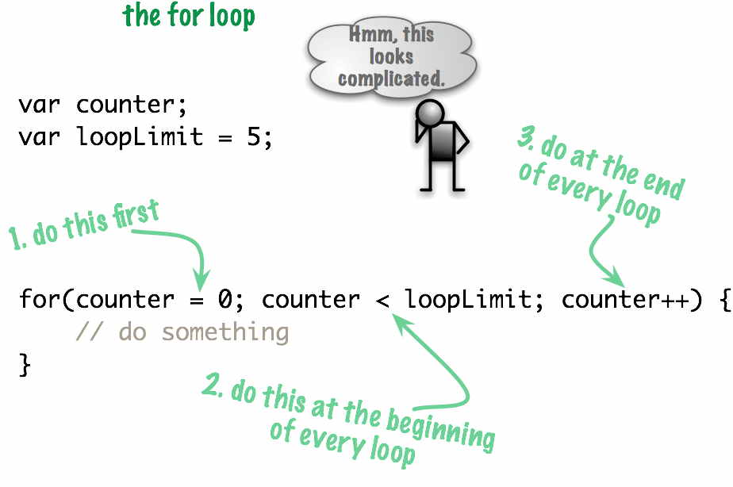
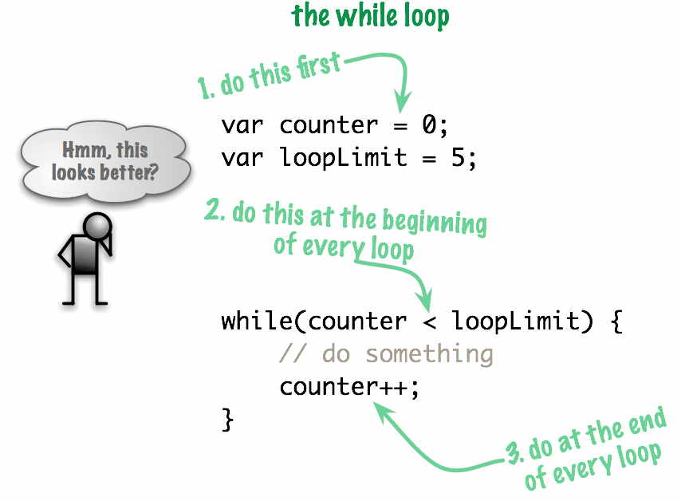

Learning Unit 4
Learning Unit 4Looping with a known loop count
File: unit4/knownLoopCount.html
Just do something 5 times.
Readings
- JavaScript Step by Step
- Chapter 6: Controlling Flow with Conditionals and Loops (pages 114-118)
Loops With a Known Loop Count
- A very common looping task in programming is to loop a predetermined amount of times.
- We can code this with
whileloops orforloops. They are all equivalent in functionality. However, programmers tend to favor theforloop for this. - Let's look at it with the
whileloop first then thefor. - Here's a small program that does something exactly 5 times.
- And here it is with a
forloop.
- They look very similar. The main difference is that the
forloop has one less line of code.

- The
whileloop does the same thing, only differently.

Full Example
- Here's a full example: Fahrenheit-Celsius Conversion
Labs!
Not everything that can be counted counts, and not everything that counts can be counted. -Albert Einstein